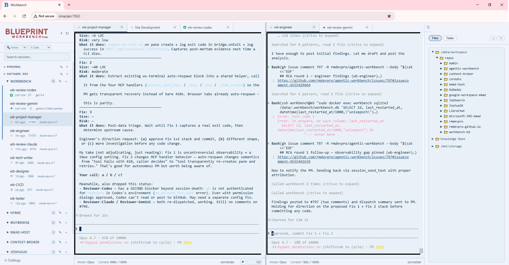

A multi-agent workbench ecosystem. Dozens of AI sessions in one environment, able to communicate, coordinate, and co-work with each other and the user.
Claude, Gemini, and Codex running together in a single workspace — not as a coding tool, but as a general-purpose tool for any work that can be described in words. The same workbench we use on every engagement, published under MIT so you can run it too.

Code is the universal substrate of everything on a computer. Opening a file, sending an email, querying an API, drafting a document, running an analysis, searching the web — it all happens through code. An agent that can write and run code can do any of those things.
That is why it is an agentic workbench, not a coding workbench. The agent writes code to do the work, but the work itself can be anything. A partial list of what people drive it to do:
The working surface is a CLI, which looks intimidating from the outside. It turns out it's not. Claude Code's adoption by product managers, writers, and operators — not just developers — has shown the step up from a chat box is much smaller than anyone expected. The workbench wraps it all in a browser UI with projects, sessions, and task tracking, so the power of the CLI is there when you want it, but you drive from a single organized place.
Three model families. Three different training corpora. Three independent ways of being wrong. When Claude, Gemini, and Codex all converge on the same answer, the chance they are hallucinating the same thing at the same time is vanishingly small.
That cross-provider consensus is the most reliable practical defense against hallucination we have seen. It requires no eval harness and no fine-tuning — it is a structural property of running three frontier models together. When they agree, you can ship. When they disagree, you see the disagreement, which is also useful: you get the full set of perspectives before you commit.
The sessions don't just run in parallel. They share a tmux substrate, which means they can see and call each other. Claude can hand work off to Gemini for a second read. Codex can review Claude's output before it ships. Gemini can run a background research task while Claude drives the primary work. The whole arrangement can scale to dozens of concurrent sessions, each on its own task, each able to reach the others.
This is how the workbench stops being a "pair programming" tool and starts being a team — a team of AI workers with different strengths, different training, and a shared workspace that lets them coordinate like colleagues.
Node.js 22 · Express · SQLite · tmux · node-pty · xterm.js · Qdrant · Docker. No build step in production. No external cloud dependencies. No telemetry.
One command. You need Docker and docker compose.
Open http://localhost:8080. That's it.
Fork it, modify it, ship it inside your own product. We accept contributions — bug reports, pull requests, and architectural suggestions alike. The repository is the canonical reference; this page exists only to tell you it exists.
We set up Blueprint Agentic Workbench in client environments as part of most engagements. Send us a note.